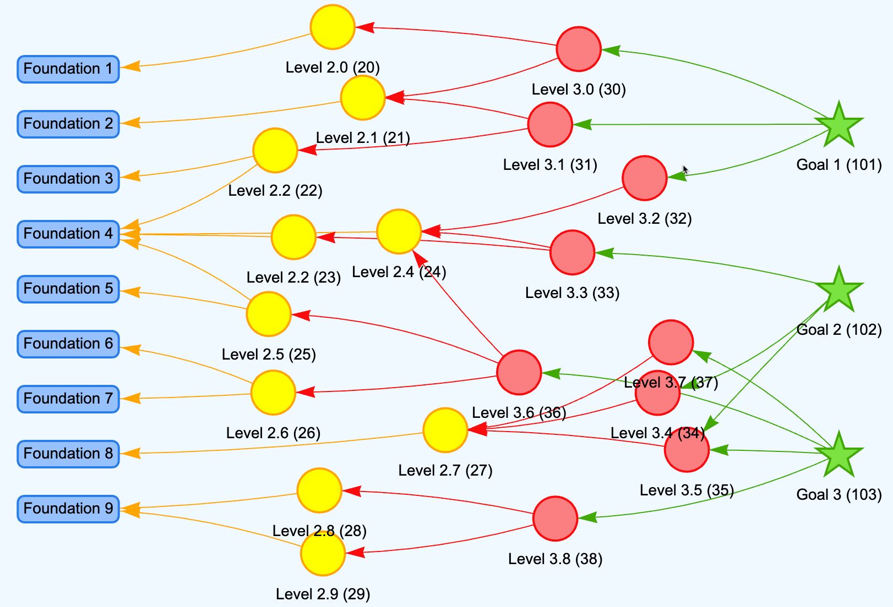

Fix the X Positions

Left to Right Concept Graphs
In this lesson, we learn how to control the X placement of both the foundational concepts to the left of a concept dependency graph and goals to the right of the network. This allows us to consistently view a learning graph from prerequisite concepts on the left and goals on the right.
Order of Labs
Our first examples will manually have us label each of the nodes that disable the physics for x-placement of the nodes in the correct locations. Later, we show that you can add a JavaScript function that will automatically apply placement rules to nodes in groups. This make preparing data much simpler.
Background on the Physics of Springs
To place nodes on a 2-dimensional surface so they are automatically spread apart, we simulated the forces on springs. The springs will pull connected nodes closer together on the drawing canvas, but not so close that they get stacked on top of each other or overlap too much.
Here is how the JSON data will look to disable the X movement:
1 2 3 4 5 6 7 8 9 10 11 12 | |
The foundation concepts above must be placed on the left edge, around x=-400.
But we want to also prevent their X locations from getting moved.
So we use the fixed option and indicate that only the x element is fixed.
Use of Vis.js Group Property
Vis.js allows each node in a graph to belong to a single group. By convention, we use group 1 as the group for all Foundation Concepts. We also use group 12 for goal concepts, since that is a good number to set as the maximum dependency level to reach a goal within a course.
By convention, any concepts that only depend on a Foundation Concept are considered to be in level 2 concepts. If a concept depends on a level 2 concept it is called a level 3 concept. In these demos, we will be using a group number that indicates the group number = (number of hops +1) from a foundation concept.
Warning
We must also disable the Improved Layout which attempts to prevent
overlap of the nodes. Unfortunately, when we use fixed positioning on some
nodes this causes conflicts.
1 2 3 4 5 6 7 | |
Simple Demo
Lab 2 - Loading From JSON
In this lab, we successfully load our graph data from this graph.json file, but the nodes placement and instructions to disable the physics is ignored.
Lab 3 - Fixing X and Fixed By Group
This demo goes through all the nodes after they are loaded and sets their x and fixed properties if they are in the "found" or "goal" groups. It loads data from This JSON file graph-3.json which does not have any x or y locations specified and does not specify fixed physics, only groups. The program also used the options/groups to do styling on the nodes.
JavaScript to Fix X by Group ID
1 2 3 4 5 6 7 8 9 10 11 12 13 | |
Group Styling
1 2 3 4 5 6 7 8 9 10 11 12 13 14 15 16 17 18 19 20 | |
Fix X Positions V6 - where group 1 and group 12 have their X positions pinned to x=-1000 and x=1000 respectively.
The code that fixes the x positions for nodes in groups 1 and 12 is executed immediately after the nodes are created. Since the function is written within a forEach loop right after the nodes are defined, it runs automatically when the script is loaded. No explicit function call is needed because the function is not declared separately; it is an inline anonymous function applied to the nodes directly.
Fix X Positions V7 - where we shorten distance between the left and right x positions to be 500, not 1000.
An alternative that might be easier to work with is to create a function that fixes the left and right nodes:
1 2 3 4 5 6 7 8 9 10 11 12 13 14 15 | |
Prompt
1 2 3 | |
ChatGPT said:
In vis.js, the built-in options for node positioning allow you to fix both the x and y coordinates of a node using the fixed option. However, freezing only one axis while letting the other float (like freezing the x-axis and letting the y-axis adjust with the force-directed graph algorithm) is not supported natively.
That said, you can achieve this behavior with a workaround by using the physics option and manually adjusting the node's x position in each frame:
- Set the node's
xposition and use thefixed: { x: true, y: false }option to lock only the x-axis. - During the graph's update cycle, reapply the node's fixed x position while letting the force algorithm adjust the y position.
Here's an example code snippet to implement this behavior:
1 2 3 4 5 6 7 8 9 10 11 12 13 14 15 16 17 18 19 20 21 | |
1 2 3 4 5 6 7 8 9 10 11 12 13 14 15 16 17 18 19 20 21 22 23 24 25 26 27 28 29 30 31 32 33 34 35 36 | |
Explanation of Changes
-
Fixed Nodes Configuration:
fixed: { x: true, y: false }: This ensures that the x-position of the node remains constant while allowing the y-position to be influenced by the physics engine.physics: false: Disables physics simulation for these nodes, preventing them from being moved by forces or other nodes.-
Removal of
beforeDrawingEvent: -
Since we're now using
physics: falsefor fixed nodes, the manual adjustment in thebeforeDrawingevent is no longer necessary and has been removed to prevent interference. -
Centering the Graph:
-
moveToMethod: After the network stabilizes,moveTocenters the graph at (0,0) with a smooth animation. stabilizationSettings: Increased the number of iterations to ensure the network has ample time to stabilize before centering.-
Responsive Design:
-
Window Resize Event: Added an event listener to re-fit the network when the browser window is resized, maintaining the centered view.
-
Node Styling (Optional):
-
Enhanced node appearance for better visibility and aesthetics. This is optional but can help in visual differentiation.
Additional Tips
-
Adjust Initial Positions: Ensure that the initial
xpositions of the fixed nodes are within the visible range of your container. If nodes are still drifting off, try settingxto smaller absolute values (e.g., closer to 0). -
Scale Adjustment: If the graph appears too zoomed out or in, adjust the
scaleparameter in themoveTomethod to better fit the nodes within the view. -
Solver Selection: While
forceAtlas2Basedis a good general-purpose solver, experimenting with different solvers likebarnesHutorrepulsionmight yield better results based on your specific graph structure. -
Debugging Node Positions: Temporarily disable physics (
physics: false) for all nodes to manually position them and ensure they appear correctly within the view. Once satisfied, re-enable physics selectively.
Move to Center
1 | |
Modifying Nodes after loading
1 2 3 4 5 6 7 8 9 10 11 12 13 14 15 16 17 18 19 20 21 22 23 24 25 | |
Fix to Disable Physics on Foundation and Goal Nodes
After your network is generated add the following JavaScript code:
1 2 3 4 5 6 7 8 9 10 11 12 13 14 15 16 17 18 19 20 21 22 23 24 25 26 27 28 | |
Final Thoughts
By configuring the fixed nodes correctly and ensuring they are excluded from the physics simulation, you should achieve the desired behavior where specific nodes remain anchored on the x-axis while others are dynamically positioned. Centering the graph post-stabilization ensures that all nodes remain within the visible area, providing a clear and organized visualization.
Feel free to adjust the parameters further based on the specific requirements of your graph and the visual outcome you desire. Let me know if you encounter any more issues or need further assistance!